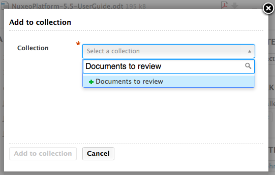
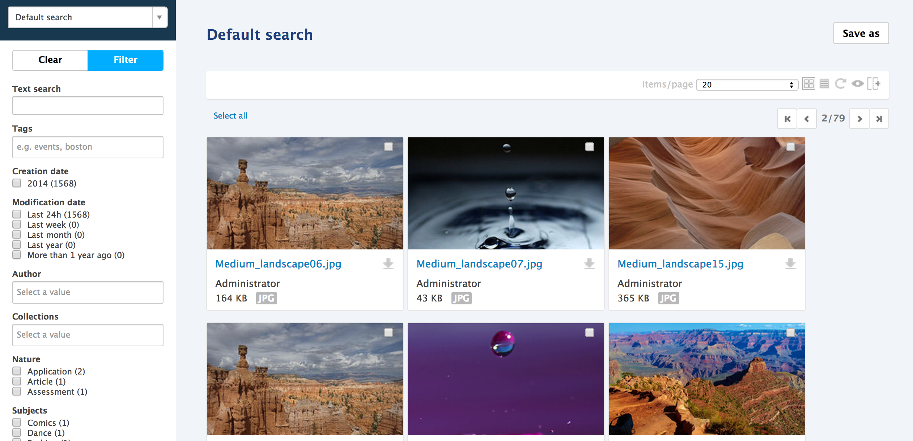
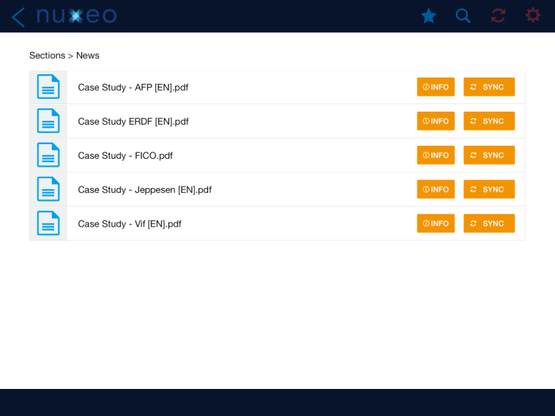
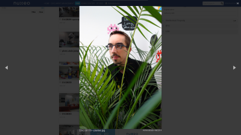
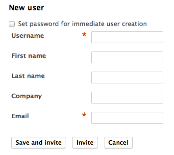

For Users
Nuxeo Drive
Nuxeo Drive was greatly improved this year, it is now much easier to install, use an update.
- Binary installer for OS X and Windows are all signed. See NXP-12981 for details.
-
The Nuxeo Drive folder can be configured. Currently it is:
- Under OS X and Linux in the user home: ~
- Under Windows: in ~/Documents (Windows 7) or ~/My Documents (XP)
- You can choose its location during installation.
- It has an automatic, silent update. This makes everything much smoother. The user will be notified when a new version is available and when it has been installed.
- Synchronization algorytghm has been optimized and made more robust.
- We also added the possibility to suspend/resume the synchronization.

- It is now also possible to filter out some folders from the Drive desktop interface so that they are not synchronized.
- Nuxeo Drive has an automatic, silent update, that works with an update site. The user will be notified when a new version is available and when it has been installed. Update site can be local to the company.
- Nuxeo Drive can be used for “live editing” a document, in replacement to the deprecated Nuxeo Live Edit. Documents being live edited are going to a special Drive folder called Locally Edited.
- It is possible to edit metadata from the Desktop interface on Windows. Right-click on a document, click on the Nuxeo Drive action. In the popup you can edit the metadata associated to the type of the document that holds the binary. A few other actions are also made available: link to the document in the web application, locking, following.
Collections
A collection issue a folder-like document in which you can file existing documents. Documents are not actually copied or moved into the collection, which only holds a link to the document in its original location.

Collections are persisted, per user, sharable and are a great way to provide bulk features such as:
- Bulk validation
- Bulk publishing
- Bulk download
- ZIP export
- PDF export


Collections are a natural way of working among thousands of assets and documents. You can search for documents belonging to a given collection, you can import a set of files and make them automatically belonging to a collection. It is even possible with some additional configuration to get a collection content synchronized with Nuxeo Drive.
Search Experience - Rebooted
The search experience has been consolidated:
- All the search features have been grouped in a new tab called “Search”.
- In this tab, the thumbnail view has been greatly improved.
- Search filter handles facets, that enable to quickly focus on interesting documents. It is possible to edit columns of the result and to save searches.
- Multiple search filters can be contributed, and they can be hidden or displayed depending on the profile of the user.
- Finally, the Quick search now relies on select2, providing a much better feeling!


Spreadsheet Edit
A new add-on called “Spreadsheet" allows to display a spreadsheet like the user interface. You can bulk-edit metadata from this spreadsheet view and select and drag values.

Bulk Creation
You now have a bulk import action in the main interface. You can set metadata, tags and collections right at the import time for all the documents that are dropped. The bulk edit also now supports the collections and tags interface.

Nuxeo Drive iOS Edition
An iOS app, that can be installed on iPad (for now) and that allows the user to browse online or to take on the road the documents that belong to folders that have been selected by the user for Drive synchronisation. Typical use case is sales kit synchronisation for offline access. The application is read only, it doesn't allow to edit the documents.


Full Screen Mode
You can now navigate through a document list in full screen mode.

User Invitation
To enforce the security around user creation process, the default mode is now to invite users via email, and user is created in the system only when she fills complementary information, including her password. That way, password do not have to be transferred via email or parallel channels.


UI/UX
A huge work has been done on the look&feel. Beside the global appearance that has been totally reviewed many details have been taken care of.
- It now uses background images for a better rendering.
- Buttons on content views are hidden as long as nothing is selected.
- Main action of most of the forms has a different caller to make it easier to found.
- We changed the way we display tooltips by using the jQuery library tipsy.
- IE11 is supported. Safe Edit, the feature that automatically saves your work even if you didn't submit your form, has been also implemented on toggleable forms.
Favorites
Users are able to pin documents. These documents are then in their "Favorites" collection, which is automatically created. When a document is pinned, the icon changes so that the user knows it is pinned. Clicking on the new icon "unpins" the document.
Insert a Video in a Note
Users can now reference a video inside a Note document type. The HTML5 player is used to play the video.
Photoshop Mime-types Correctly Detected
Missing mime-types for Photoshop were added, improving detection and image processing of those kind of files.
Updated Picture Generation Resolution
We increased default picture transformations sizes, following the evolution of the digital industry. Sizes are now 1200 px max for medium, 350 px for small, 150 px max for thumbnail.
Simplified ACLs
We removed negative permission except for the action of blocking inheritance (Deny Everything Everyone). This important change of behavior can be set back with a property nuxeo.security.allowNegativeACL=true Note that negative permissions are not compatible with using Elasticsearch or MongoDB.
Suggestion Widgets
Select2-based suggestion widgets introduced in 5.7.3 received a couple of bug fixes. New widgets properties have been introduced (available in Studio):
- All single suggestion widgets: a new widget property dropdownOnArrow dropdowns suggestions when clicking on the right side arrow of the select2 box instead of the whole container. This is handy when you use custom formatters containing links or other actions (See NXP-13715 and documentation).
- All multiple suggestion widgets: new property to change the separator used by select2 to handle multiple selection. The default separator is a comma and could be an issue when handled references contains a comma (See NXP-13713).
- Directory suggestion widgets: new property to fetch the suggestions, 'contains' instead of 'starts with' (See NXP-13586).